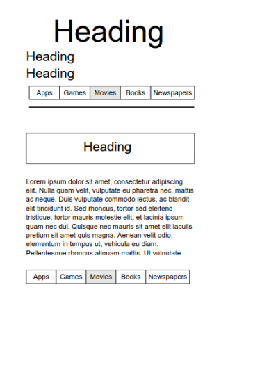
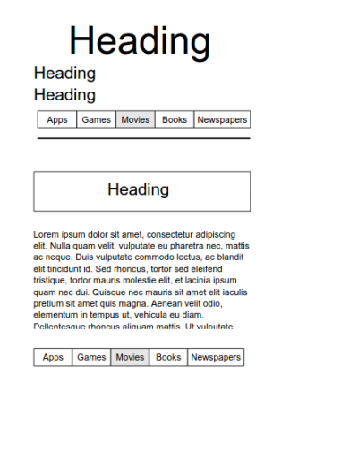

Had a good week implementing the skelton css into my site making it responsive
What is responsive site design, and why is it important?
Responsive site design is adding or referencing some css that adjusts your webite width and other features dependant on the size of the screen (in pixels) that is viewing your page.
What is mobile first design, and why is it important?
A higher percentage of web content is getting viewed primarily or only on mobile phones and similar smaller devices such as tablets. Mobile first design is gesigning your site with mobile in mind and working outwards, in terms of screen size, to the traditional desktop sized resolution.
What are frameworks, and what are the pros and cons.
Frameworks for webpages are similar to frameworks for building a house. Each time a builder builds a house they use commonly accepted and standard methods for constructing the frame of the house. Similarly web developers don't need to start from scratch or reinvent the wheel everytime they start a new webpage, they can use pre-constructed packages of html, css and js as a starting point for the new webpage.
What are wireframes and why are they used?
Wireframes are used to plan the structure and content layout iof your website prior to adding the actual content.
 
